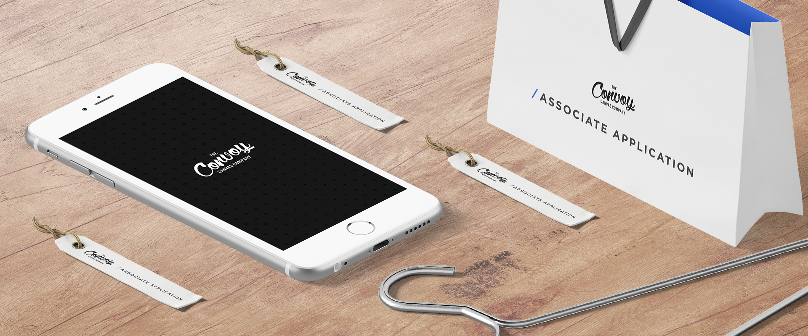
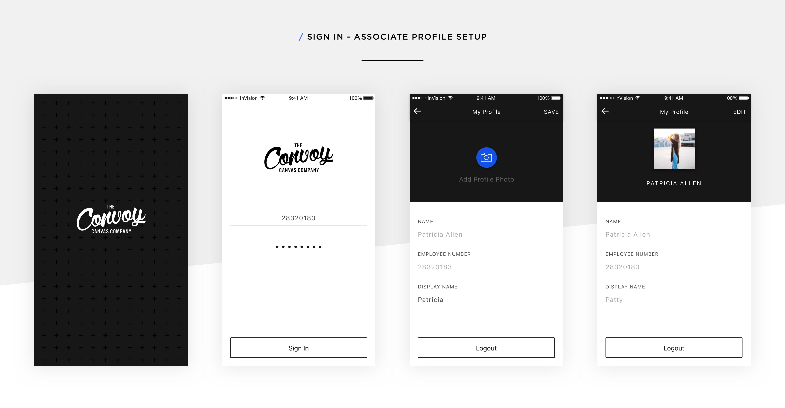
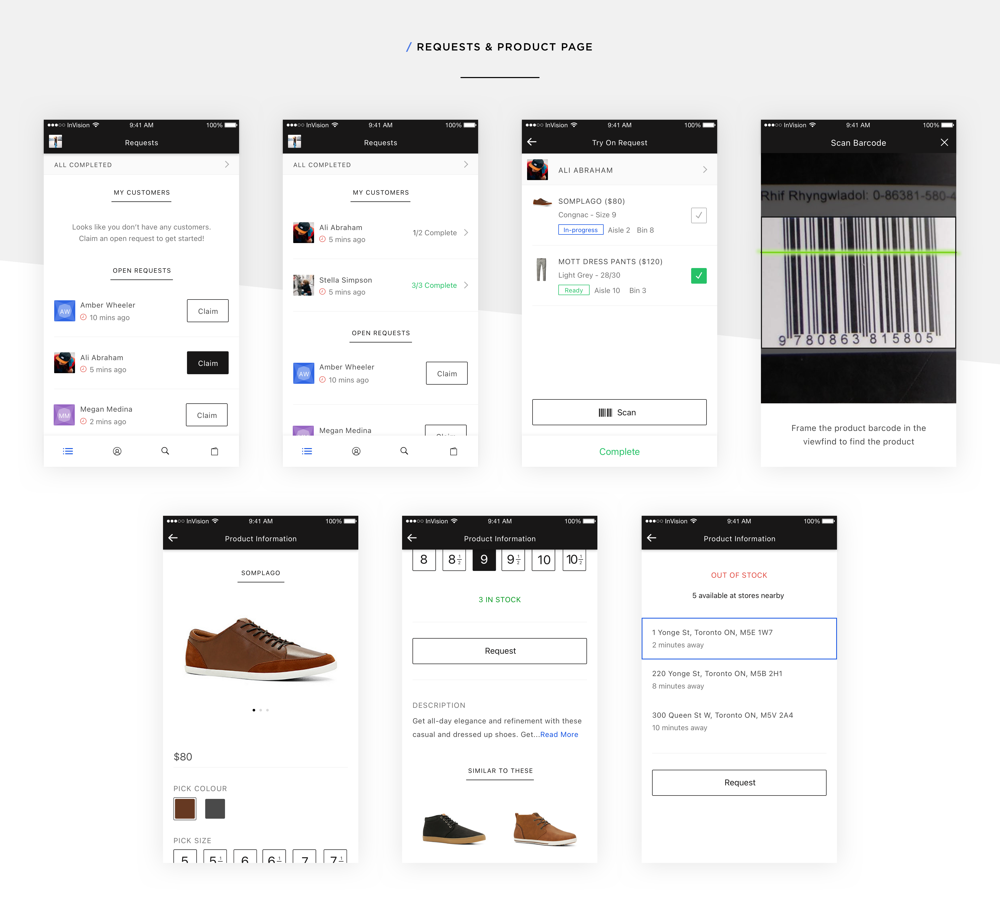
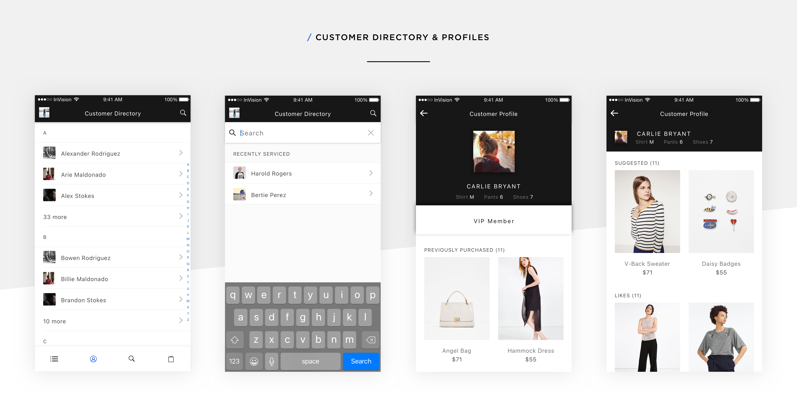
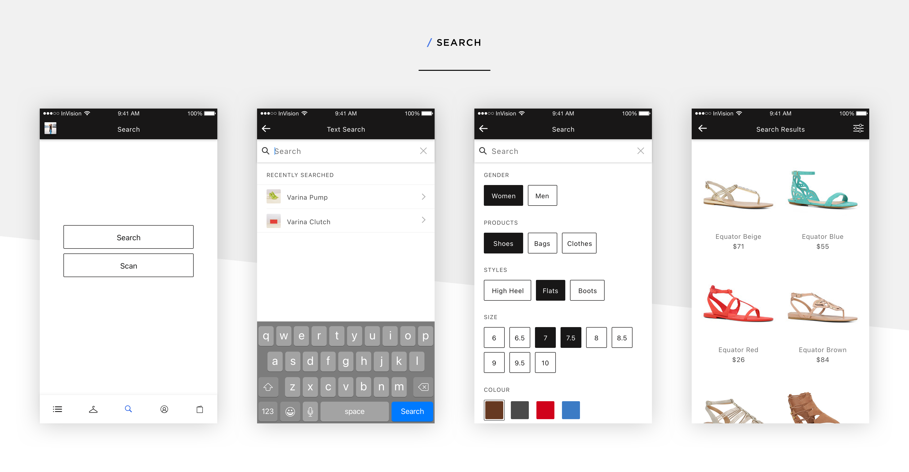
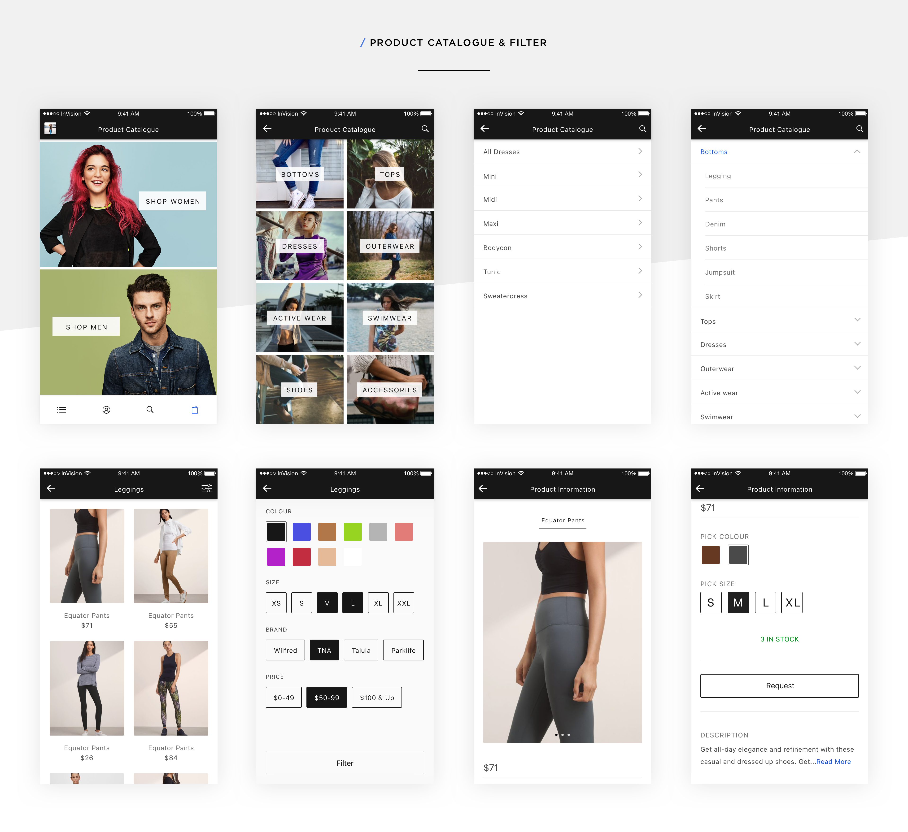
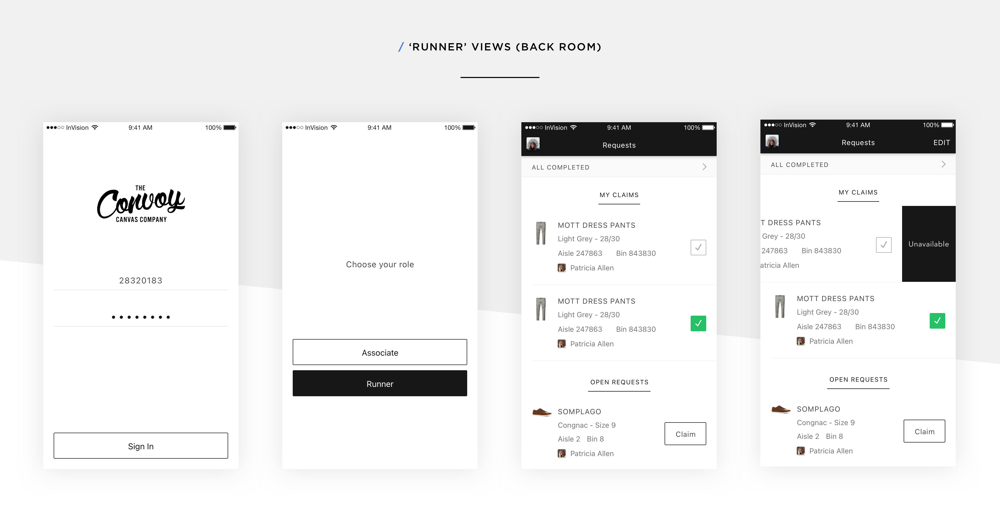

Product designer on an iPad companion app for in-store retail associates, helping them look up product information, manage customer profiles, and close sales on the floor. Onboarded and customised the experience for brands including Kiehl's, Aldo, Indigo, and L'Oreal.

Kinetic Commerce built a white-label iPad app for in-store retail associates. It was a tool they could carry on the floor to surface real-time product information, customer purchase history, and guided selling flows that helped close more sales and elevate the in-store experience. I led product design end to end, from information architecture through production-ready screens, then adapted that core experience for each retail partner. I balanced a consistent underlying system with the visual identity and workflows each brand needed, while also conducting in-store research with associates to understand how they actually worked the floor.
Under the confidentiality agreement I signed with Kinetic's brand partners, I'm not able to show the branded visual designs here; the screens below are from the core, unbranded product I designed and built the brand experiences on top of.
Core associate app
The associate's path through the app end to end, signing in and setting up a profile, handling customer requests and looking up products, working from the customer directory, searching and filtering the catalogue, and the back-of-house "runner" view that fulfills requests from the stockroom.

Signing in with an employee number and setting up an associate profile (name, employee number, and a display name customers see).

Claiming open customer requests, tracking try-on items against aisle and bin locations, and scanning a barcode to pull up product details on the spot.

Looking up a customer in the directory to see their sizes, purchase history, and suggested or liked items, giving the associate context before they even say hello.

Searching by text or barcode scan, then narrowing results by gender, product type, style, size, and colour to find exactly what a customer's asking for.

Browsing the full product catalogue by category and filtering by colour, size, brand, and price down to a single item's stock and request options.

The stockroom side of the flow: a "Runner" role signs in separately and works through a shared claims queue, marking try-on items ready or unavailable for the associate out on the floor.
Get in Touch
I'm currently open to new opportunities. If you're looking for a Staff Product Designer who brings clarity to complex problems, let's talk.